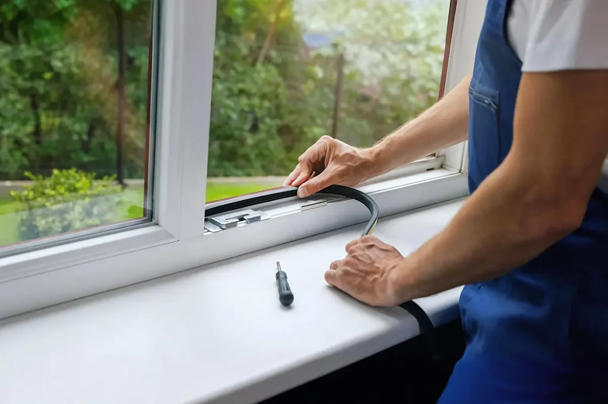

Fachgerechte Fensterwartung mit präziser Einstellung,
Reparatur und Austausch von Bauteilen für bessere Funktion und
Energieeffizienz. Einstellung der Flügel, Austausch der Griffe
und Beseitigung von Zugluft.

Austausch von Dichtungen – Beseitigung von Zugluft
Wir tauschen alte Fenster- und Türdichtungen fachgerecht aus,
um Zugluft zu vermeiden und die Energieeffizienz zu
verbessern.